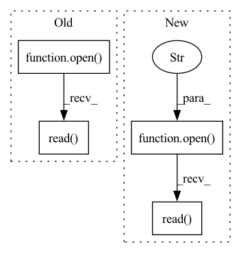

Pattern ID :11178
Before Change
self.windows_per_epoch = windows_per_epoch
self.apply_cutout = apply_cutout
nb_frames = [l.split(",") for l in open("splits/nb_frames.csv", "r").read() .splitlines()]
self.nb_frames = {k: int(w) for k, w in nb_frames} // between 73 and 47419
self.files = open("splits/{}.csv".format(self.split), "r").read().splitlines()After Change
self.nb_frames = {}
self.fps = {}
for l in open("splits/frames_fps.csv", "r").read() .splitlines():
name, nframes, fps = l.split(",")
self.nb_frames[name] = int(nframes)
self.fps[name] = float(fps)In pattern: SUPERPATTERN
Frequency: 3
Non-data size: 4
Instances Fragment ID: 38231647
Project Name: sailordiary/m3f.pytorch
Commit Name: a80d76f2f4a202b02486adca13709ed5a60ae750
Time: 2020-01-31
Author: me@sailorzhang.com
File Name: models/dataset.py
M Class Name: AffWild2iBugSequenceDataset
N Class Name: AffWild2iBugSequenceDataset
M Method Name: __init__(6)
N Method Name: __init__(6)
M Parent Class: Dataset
N Parent Class: Dataset
M File Name: models/dataset.py
N File Name: models/dataset.py
M Start Line: 101
M End Line: 102
N Start Line: 101
N End Line: 108
Before Change
except:
depth = 0
png = open(pngfile, "rb").read()
return png, depth
finally:
// Cleanup temporariesAfter Change
if p.returncode != 0:
raise Exception("PDFpng error", serr)
png=[open(pngfile.replace(".png", "")+"-%i.png" % i, "rb").read() for i in range(len(self.math))]
return png
finally: Fragment ID: 38231645
Project Name: lukas-blecher/latex-ocr
Commit Name: d4f7bfd36b2751ef8bb0ddd17e3e633d4d072467
Time: 2020-12-13
Author: luk.blecher@gmx.de
File Name: dataset/latex2png.py
M Class Name: Latex
N Class Name: Latex
M Method Name: convert_file(3)
N Method Name: convert_file(3)
M Parent Class:
N Parent Class:
M File Name: dataset/latex2png.py
N File Name: dataset/latex2png.py
M Start Line: 79
M End Line: 105
N Start Line: 69
N End Line: 90
Before Change
temp_file = output_file + ".tmp"
with open(temp_file, "w") as fout:
fout.write(open(output_file).read() .replace("\r", " ")) // delete \r
//print(os.path.abspath(__file__))
cmd = r"cat %s | node %s %s > %s " % (temp_file, os.path.join(os.path.dirname(__file__), "preprocess_latex.js"), parameters.mode, output_file)After Change
ops = re.compile(r"\\operatorname {(%s)}" % operators)
temp_file = output_file + ".tmp"
with open(temp_file, "w") as fout:
prepre = open(output_file, "r").read() .replace("\r", " ") // delete \r
// replace split, align with aligned
prepre = re.sub(r"\\begin{(split|align|alignedat|alignat|eqnarray)\*?}(.+?)\\end{\1\*?}", r"\\begin{aligned}\2\\end{aligned}", prepre, flags=re.S)
prepre = re.sub(r"\\begin{(smallmatrix)\*?}(.+?)\\end{\1\*?}", r"\\begin{matrix}\2\\end{matrix}", prepre, flags=re.S) Fragment ID: 38231644
Project Name: lukas-blecher/latex-ocr
Commit Name: 97df469003d35553b53b408fe18d7ce676eb136c
Time: 2021-02-18
Author: luk.blecher@gmx.de
File Name: dataset/preprocessing/preprocess_formulas.py
M Class Name: AnonimousClass
N Class Name: AnonimousClass
M Method Name: main(1)
N Method Name: main(1)
M Parent Class:
N Parent Class:
M File Name: dataset/preprocessing/preprocess_formulas.py
N File Name: dataset/preprocessing/preprocess_formulas.py
M Start Line: 52
M End Line: 76
N Start Line: 53
N End Line: 89